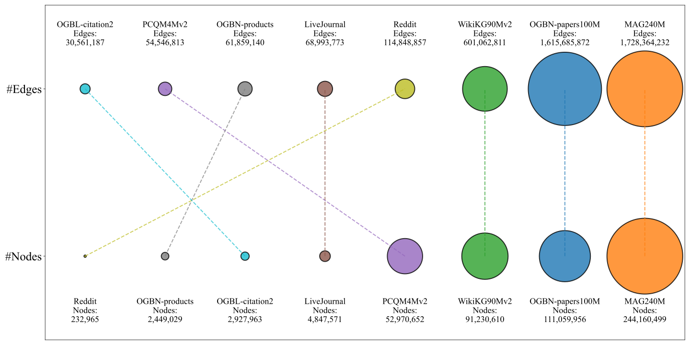
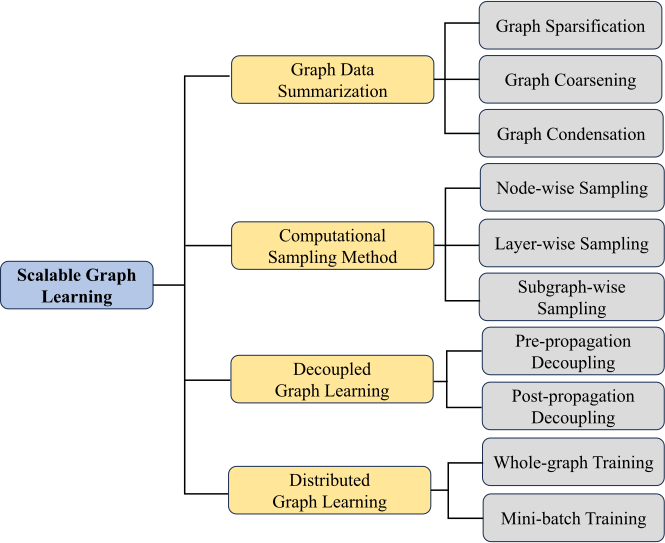
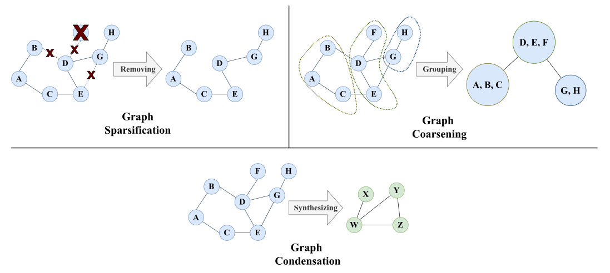
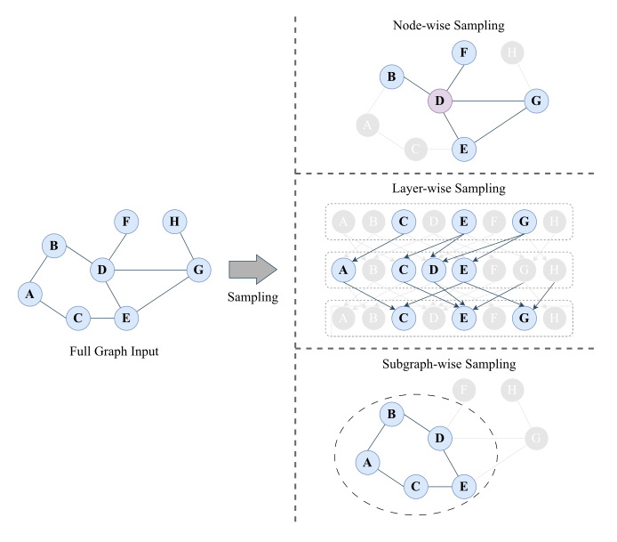

Scalable Graph Learning
The rapid increase in the size and complexity of graphs poses significant challenges for graph learning techniques [73, 34, 74]. The traditional approach to graph learning is not well-suited for large graphs, primarily due to scalability challenges stemming from high model complexity and excessive memory demands. Firstly, processing large-scale graphs requires immense computational resources. Conventional graph learning methods involve operations like matrix multiplication, which do not scale efficiently as the graph size increases. This can lead to bottlenecks, prolonged processing times, and difficulties in training models within a feasible timeframe. Secondly, graphs with millions of nodes and billions of edges demand substantial memory allocation for storing adjacency matrices and associated features. As the graph size grows, memory consumption can exceed system capacity, making storage and processing impractical.
Several large, publicly available graph datasets illustrate the scale and complexity of modern graph learning challenges, as shown in Figure 2.1. These datasets include MAG240M [75], OGBN [75], WikiKG90Mv2 [76], Reddit [77], and LiveJournal [78]. Among them, MAG240M is the largest, containing over 240 million nodes and 1.7 billion edges, making it particularly challenging for traditional graph learning methods. Even smaller datasets, such as Reddit, still consist of a significant number of nodes and edges, highlighting the need for scalable and efficient graph learning techniques.


The concept of scalable graph learning [79] has emerged as a solution to address the scalability limitations of traditional graph learning methods. Its primary goal is to efficiently process large-scale static graphs, such as social networks with over 1 billion edges and more than 100 million nodes, especially for tasks like node and edge classification. By optimizing computational efficiency and memory usage, scalable graph learning enables practical applications in massive graphs in the real world.
In this survey, as illustrated in Figure 2.2, we focus on existing strategies that can be used to improve the scalability of graph learning, which fall into the following four categories: graph data summarization, computational sampling methods, decoupled graph learning, and distributed graph learning. Graph data summarization [80] deals with graph sparsification, graph condensation, and graph coarsening. Computational sampling methods [79] include several strategies: node-wise, layer-wise, and subgraph-wise. Decoupled graph learning [79] can be divided into pre-propagation and post-propagation decoupling. Lastly, distributed graph learning [81] includes whole-graph training and mini-batch training strategies. Essentially, these categorizations differ in solving the scalability challenge in graph learning. This survey presents an extensive review of representative state-of-the-art scalable graph learning techniques.

Graph Data Summarization
Graph data summarization, also known as graph reduction or simplification, refers to reducing the size of a graph while preserving its essential properties and information [80]. This process is important for handling large-scale graphs by making a smaller and more manageable graph structure that could enhance scalability in graph learning.
This section categorizes the graph data summarization techniques into three major groups: graph sparsification, condensation, and coarsening. Figure 2.3 compares the three graph data summarization strategies. Graph sparsification selects a subset of nodes and edges from the original graph to preserve critical properties, such as essential edges or node centrality [82]. On the other hand, graph coarsening groups and aggregates similar nodes into super-nodes and their connections into super-edges instead of removing nodes [83]. Graph condensation [84], a more recent method, differs from sparsification and coarsening by creating a new, smaller synthetic graph that retains the task performance of graph learning while reducing graph size. We discuss each of the techniques in the sub-sections below:
Graph Sparsification
Graph sparsification aims to improve scalability in graph learning by selecting important nodes or edges to result in a smaller graph that still maintains the structural quality of the original graph. Given a graph \(G = (V, E)\), graph sparsification selects representative nodes or edges from the original graph \(G\) to produce a graph \(G' = (V', E')\), where \(V'\) or \(E'\) are subsets of \(V\) or \(E\). The simplest way to perform sparsification is by randomly sampling a subset of edges. This technique is called a random sparsifier, which samples all edges in the graph with equal probability [82].
Cut and Distance-Preserving Sparsifiers. Traditional sparsification techniques are based on the concept of cut sparsifiers [85]. These methods aim to preserve the total weight of edges that separate two distinct groups of nodes, known as a cut, ensuring that the sparsified graph closely approximates the original graph’s cut properties. This approach reduces the number of edges while maintaining the overall structural integrity of the graph, making it more computationally efficient for various graph learning tasks. [86] developed an algorithm called Spanner, which starts with an empty edge set and creates a smaller version of the graph by adding only the most important edges. In the spanner algorithm, the smaller graph retains the approximate distances between nodes, similar to the original graph, but with fewer connections. This means that while the sparsified graph may have significantly fewer edges, the overall structure and relationships between nodes are preserved, allowing for efficient computations and graph learning tasks without losing critical information. They proved that the original graph could be reduced to a smaller graph called a 2t-Spanner, which has fewer edges, around \(O(N^{1+\frac{1}{t}})\), where \(N\) is the number of nodes.
Spectral sparsifiers. Other techniques have also been proposed. Unlike methods that maintain pairwise distances, some focus on preserving cuts or spectral properties, known as spectral sparsifiers [82, 87]. These methods ensure that the sparsified graph retains important spectral properties, such as those encoded in the graph Laplacian. The effective resistance sparsifier (ER) [88] is a representative strategy. ER is derived from an analogy with an electrical circuit where edges represent resistors. The method measures the effective resistance of an edge in terms of how much "effort" it takes for electric current to flow from one node to another. ER has demonstrated that the quadratic form of the Laplacian in the sparsified graph remains close to that of the original graph, as captured by the following inequality:
Similarity-based Sparsifiers. Another group of sparsifiers incorporates similarity evaluation as a metric to assess the quality of the sparsified graph. For example, methods inspired by the structural clustering algorithm for networks (SCAN) [90] use structural similarity measures to decide which edges to retain, keeping those that connect nodes sharing many neighbors while discarding edges with low similarity. If two nodes share many neighbors, their connection is likely retained, as they belong to the same cluster. In contrast, edges between nodes with low similarity are deleted since it is considered less important. Another work, the local Jaccard similarity sparsifier (L-Spar) [91], focuses on a localized approach to edge sparsification. L-Spar selects edges for each node based on its local neighborhood structure. It ranks the edges connected to a node by Jaccard similarity and retains the top-ranked ones, ensuring that nodes stay connected to their most similar neighbors. This approach helps preserve local cluster structures while significantly reducing the overall edge set of the graph.
Deep learning-based Sparsifiers. Following the significant advances in deep learning, some approaches combine sparsification strategies with deep learning techniques to improve the performance of downstream tasks. Examples include DropEdge [92], randomly removing edges from the input graph during training in each epoch. NeuralSparse [93] develops edge pruning and deep learning to parameterize the sparsification process. SparRL [94] uses reinforcement learning by adjusting reward functions to perform sparsification while maintaining the quality of pairwise node distances. WIS (Walk Index Sparsification) by [95] removes edges based on the walk index, preserving the ability of graph learning to model interactions between vertices. While graph sparsification effectively reduces the number of edges, it may not drastically reduce the overall graph structure. In contrast, more recent strategies like graph coarsening and condensation can significantly change the original structure. Graph coarsening combines nodes into super-nodes and edges into super-edges, while graph condensation creates new synthetic graph structures inspired by the original graph.
Graph Coarsening
Graph coarsening is a promising direction for improving the scalability of graph processing by summarizing a very large graph into a smaller, tractable one. The selection of nodes or edges in sparsification methods can lead to the loss of information. Graph coarsening ensures that sufficient valuable information from the graph structure is preserved by grouping and aggregating nodes or edges. Given \(G = (V, E)\), graph coarsening produces new graph \(G' = (V', E')\) which contains super-nodes \(V'\) and super-edges \(E'\), where \(|V'| < |V|\) and \(|E'| < |E|\). The coarse graph should be tractable and mapped from the original graph, which can be represented by a one-hot matrix \(C \in \{0,1\}^{|V| \times |V' |}\) to denote the membership of a group of nodes. The adjacency matrix of the coarsened graph is \(A' = C^\intercal AC\), and the Laplacian matrix is \(L' = C^\intercal LC\).
Classical Coarsening Techniques. The algebraic multigrid literature has influenced the development of graph coarsening [83]. The classical graph coarsening techniques include some techniques that use traditional graph partitioning, clustering, and spectral properties to group nodes into supernodes while reducing graph size. One example of clustering is spectral clustering [96], which leverages the eigenvectors of the graph Laplacian to find dense partitions within the graph, summarizing its structure. An earlier technique, Edge Matching, introduced by [97], merges node pairs by maximizing their total edge weight. This approach typically computes the weight for each pair of nodes \((v_i, v_j)\), defined as \(\frac{W_{ij}}{\max(d_i, d_j)}\), where \(d_i\) and \(d_j\) represent the degrees of the nodes. This ensures that significant connections in the graph are preserved during the reduction process. Kron Reduction [98] is an algebraic method that reduces a graph by applying the Schur complement to its Laplacian matrix, preserving essential physical properties like effective resistance, which is critical in applications such as electrical networks. CoarseNet [99] focuses on retaining diffusion properties by grouping nodes based on their influence within the network, enabling substantial graph reduction without losing key information on how processes propagate. Compressive network embedding (COSINE) by [100] performs coarsening by partitioning nodes into groups for parameter sharing in compressive embeddings. [101] introduced GraphZoom, which uses spectral properties to aggregate nodes with high similarity and builds multi-level coarsened graphs to improve the scalability of graph embedding tasks. [102] used Schur Complement and Random Contraction techniques to eliminate or combine nodes into supernodes, maintaining the graph’s spectral and structural properties to speed up embedding and simplify graph structure. Similarly, featured graph coarsening (FGC) by [103] compresses both node features and graph structure to preserve the node relationships, which is particularly useful for tasks like node classification.
Deep Learning-Based Coarsening Techniques. On the other hand, Deep Learning-Based Coarsening techniques such as convolution matching (ConvMatch) and its approximate variant, A-ConvMatch, focus on preserving the outputs of graph convolutions in GNNs [104]. These methods merge nodes based on minimizing the difference in convolution results between the original and coarsened graphs. The k-MIS-based coarsening leverages maximal independent sets to ensure even node distribution [105]. It is applied to downsample graphs for GNN pooling layers (Bacciu et al., 2023). Supervised coarsened adjacency learning (SCAL) by [106] trains the GNN model on coarsened graphs for downstream tasks, especially node classification. Other specific graph coarsening methods based on deep learning techniques specifically address scalability issues, such as variable node grouping (VNG) [107], which uses weighted k-means to match forward propagation and generate an effective mapping matrix. For applications with large-scale web graphs, [108] proposed Graph-Skeleton fetches and condenses critical background nodes into synthetic supernodes to retain structural and feature correlations essential for classification tasks while reducing the graph size by up to 99%.
Graph Condensation
Graph condensation is a strategy for creating a smaller, highly informative graph from a larger original graph [84, 109]. Unlike graph sparsification and coarsening, which simplify the existing graph, graph condensation generates a new synthetic graph designed to achieve comparable performance to the original graph on various downstream tasks. Typically, graph condensation leverages deep learning methods, specifically GNNs, to produce this condensed graph. The primary goal is to reduce the size and complexity of the graph while preserving its essential information.
Given a graph \(\mathcal{T} = (V, E)\), the aim is to learn a small synthetic graph \(\mathcal{S} = (V', E')\) where \(|V'| < |V|\) and \(|E'| < |E|\), such that models trained on \(\mathcal{S}\) perform comparably to those trained on \(\mathcal{T}\). To establish a meaningful representation between the original graph \(\mathcal{T}\) and the synthetic graph \(\mathcal{S}\), many approaches employ a shared GNN model \(\textup{GNN}_\theta\), parameterized by \(\theta\) to encode both graphs and compute task-specific losses for each graph input as follows:
Equation (2.3) states that in order to find the best possible smaller graph \(\mathcal{S}\) to train a model using optimal parameters \(\theta^\mathcal{S}\), the performance, as measured by \(\mathcal{L}^\mathcal{T}\), should be as good as possible on the original large graph \(\mathcal{T}\). It also requires that the parameters \(\theta^\mathcal{S}\) represent the best solution for the smaller graph \(\mathcal{S}\) itself, evaluated by \(\mathcal{L}^\mathcal{S}\).
Gradient Matching-based Techniques. Several popular methods have been proposed to perform graph condensation. The first taxonomy discussed in this survey paper is the gradient matching strategy. Gradient matching is an example in graph condensation where it aims to match the gradient of the model trained on the condensed graph with that of the model trained on the original graph. The first attempt by [110] proposed gradient matching for image classification datasets, where the optimized parameters of these gradient matching models are trained on two datasets. Inspired by an early work of [110], graph condensation (GCond) [111] proposed to match model gradients at each training step \(t\). This approach allows the training path on the condensed data to imitate the original data, leading to similar solutions between models trained on both datasets, given the following optimization solution:
Trajectory Matching-Based Techniques. The second taxonomy of graph condensation is trajectory matching. Unlike gradient matching, which focuses on single-step gradient alignment, trajectory matching considers the entire training trajectory of the model. It aims to ensure that the model’s learning path on the small graph closely follows that on the original large graph. Structure-free graph condensation (SFGC)[116] introduces trajectory matching by aligning the long-term learning behaviors between the original large graph and the condensed, structure-free data, improving knowledge transfer without explicitly maintaining the graph structure. Graph condensation via expanding window matching (GEOM), proposed by [117], tackles the issue of limited supervision in SFGC, especially when dealing with complex nodes. GEOM evaluates these nodes based on homophily and uses curriculum learning [118] to gradually increase the complexity of the matching process. This approach ensures a better transfer of information from both easy and difficult nodes, helping the model generalize more effectively and capture a broader range of graph properties.
Distribution Matching-Based Techniques. The third taxonomy of graph condensation is distribution matching. While training a graph learning model on a small condensed graph can be extremely fast, creating a synthetic condensed graph structure from the original graph might be expensive due to complex bi-level optimization and second-order derivative computation. Thus, [119] proposed an alternative optimization principle called distribution matching, which was applied to image data, focusing on matching the feature distribution of the condensed and original data. It aims to generate condensed data with a feature distribution closely approximating the original data using metrics such as Maximum Mean Discrepancy (MMD). A framework called condense and train (CaT) [120] implements the distribution matching strategy in graph data using the following objective function:
Here, \(C\) represents the different classes of nodes, \(E_c\) and \(\tilde{E}_c\) are the embeddings of nodes with class \(c\) in the original and condensed graphs, respectively, and \(r_c\) is the ratio of class \(c\). This approach ensures that the synthetic graph retains essential properties from the original graph. Graph condensation via receptive field distribution matching (GCDM) by [121] expands this by matching the distribution of receptive fields between the original and condensed graphs, leveraging Maximum Mean Discrepancy (MMD) to ensure similarity. Furthermore, graph distillation with eigenbasis matching (GDEM) [122] introduces an innovative eigenbasis matching technique that directly aligns the eigenbasis and node features between real and synthetic graphs, preventing spectrum bias. [123] introduced pseudo-label guided Memory Bank (PUMA), which extends distribution matching-based techniques to continual learning, using distribution matching to efficiently balance the retention of old knowledge while learning from new data.
Kernel Ridge Regression (KRR) Techniques. The fourth taxonomy of graph condensation is Kernel Ridge Regression (KRR) [124]. It offers an alternative to the complex bi-level optimization typical of neural network approaches by formulating the condensation as a regression problem with a closed-form solution. This can lead to more efficient optimization when the number of condensed samples is small, though it may trade off some capacity to capture non-linear relationships compared to deep learning methods. The optimization solution of KRR can be formulated as follows:

Computational Sampling Methods
Computational sampling methods aim to process graph data while reducing computational complexity and memory usage [79]. In traditional graph learning techniques, such as random walks, matrix factorization, and other classical methods [127], these approaches help represent or select subsets of graph properties during the training phase. This enables efficient management of large-scale graphs by reducing the need for excessive resource consumption. These methods ensure that only essential parts of the graph are processed, making the training process more computationally feasible. In modern GNNs [1], computational sampling also mitigates the cost of training and memory usage. Additionally, one of the methods addresses the neighbor explosion problem [128], where the number of nodes and edges grows exponentially with the number of GNN layers.
In this section, we examine key computational sampling strategies used in both traditional graph learning and GNN-based approaches. These methods are categorized into three main types: node-wise sampling, layer-wise sampling, and subgraph-wise sampling. As illustrated in Figure 2.4, node-wise sampling selects neighbors for individual nodes, layer-wise sampling chooses nodes at each layer to manage computational complexity, and subgraph-wise sampling divides the graph into smaller subgraphs for independent processing during GNN training.
Node-wise Sampling
In traditional graph learning methods, node-wise sampling is often applied in algorithms like random walks [27], PageRank [129], DeepWalk [42], and Node2Vec [43], which focus on selecting individual nodes and their direct neighborhoods in the process of graph traversal or exploration and to learn graph representations. In contrast, in GNNs, node-wise sampling specifically aims to reduce the computational load during the aggregation of neighbor features.
Random Walk traverses a graph by moving from one node to a randomly selected neighbor, capturing both local and global connectivity. PageRank builds on this concept by introducing a transition mechanism that allows the walker to jump to random nodes, assigning importance to nodes based on their visit probabilities and sampling them accordingly. DeepWalk refines this approach by performing truncated random walks, limiting the number of steps to balance computational efficiency while generating node sequences. These sequences are then treated like sentences in a language model and embedded into a vector space using the Skip-Gram model. Node2Vec further enhances DeepWalk by incorporating a biased random walk strategy that blends breadth-first search (BFS) and depth-first search (DFS). This hybrid approach enables the model to capture both local neighborhood structures and long-range dependencies, leading to more informative node representations.
In the GNN context, a node-wise sampling strategy aims to aggregate information from the neighbors of selected nodes. This prevents computational overhead and reduces memory usage. GraphSAGE [77] employs a sampling strategy to select a set of neighbors \(N_s(v)\) for each node \(v\) by aggregating their features to update the node’s embedding in each GNN layer. The following is the updated node embedding at layer \(k\):
Layer-wise Sampling
Unlike node-wise sampling, layer-wise sampling methods focus on GNNs rather than traditional graph learning. GNNs typically work with a layered architecture across several network layers. In node-wise sampling for GNNs, the problem of the neighbor explosion is not fully addressed due to the exponential growth of the computational graph with the number of layers [128]. Suppose we have \(K\) nodes sampled for each target node in each layer, the total number of nodes involved still grows exponentially as \(K^L\), where \(L\) is the number of layers. This makes it challenging to train deeper networks or those with a large number of \(K\). Layer-wise sampling addresses this by selecting a fixed set of nodes at each layer independently, thereby controlling the overall computational budget. This approach addresses the neighborhood expansion problem by maintaining a consistent computational budget across layers, which improves the scalability and efficiency of training deep GNNs on larger graphs.
Several techniques have been proposed to implement layer-wise sampling strategies to enhance the scalability of GNNs. FastGCN [132] introduces layer-wise importance sampling by approximating it using the Monte Carlo method [133]. It samples a fixed number of nodes in each layer based on the importance probabilities of the node features, simplifying the complexity of the GNN process. However, FastGCN can result in unstable model outputs due to high variance, as the nodes are sampled independently at each layer without considering their connections in other layers. ASGCN [134] improves FastGCN by adaptively adjusting the sampling process based on the current model parameters to control high variance. As a result, the model focuses on the most relevant sampled nodes across layers, leading to more accurate and efficient learning on large-scale graphs. [135] propose a layer-dependent importance sampling (LADIES), which addresses the limitations of both by ensuring that the sampled nodes at each layer are connected to those in the previous layer. This concept preserves inter-layer dependencies and local graph structure while maintaining low variance, resulting in more stable training of deep GNNs on large-scale graphs. A recent technique, layer-neighbor sampling (LABOR) by [128], combines neighbor and layer sampling, using Poisson sampling [136] to significantly reduce the number of vertices and edges sampled while maintaining performance quality, making the training process much more efficient.
Subgraph-wise Sampling
Instead of processing the entire graph or sampling individual nodes or layers, subgraph sampling divides a large graph into smaller, manageable subgraphs to be processed independently. It works by selecting portions of the graph that represent the whole while maintaining the connectivity and structural properties within each subgraph. A traditional method that achieves a similar objective is spectral clustering [96], which leverages eigenvalues and eigenvectors of the graph’s Laplacian to detect community structures within the graph. Partitioning the graph into smaller groups called communities reduces computational complexity while preserving local graph properties. This enables algorithms to operate on these subgraphs independently.
In more sophisticated approaches like the GNNs, several techniques have been applied to enable subgraph-wise sampling to improve scalability. Cluster-GCN [137] uses graph partitioning algorithms to divide the graph into manageable clusters that serve as mini-batches during training. Cluster-GCN ensures that the nodes within each cluster are relevant and highly connected to preserve neighborhood information while also limiting interactions with remote nodes that are far away or in different parts of the graph. GraphSAINT [138] is another technique that uses stochastic sampling methods like random walks, edge sampling, or node-based sampling to develop subgraphs with a good representation of the original. The recent technique called SubInfer (subgraph training and inferring) by [139] is designed specifically to address large heterogeneous graphs by breaking them into smaller subgraphs based on meta-paths, which are patterns that represent specific relationships between different types of nodes and the sub-graphs are completed with important nodes to fill in missing information and balance label distributions across subgraphs.
Post-Propagation Decoupling
The first strategy is the post-propagation decoupling approach, where the graph propagation process is performed only at a later stage. For instance, when using a multi-layer perceptron (MLP) for feature transformation, it can be expressed as:
Several graph learning techniques have been proposed to implement the post-propagation strategy. Approximate personalized propagation of neural predictions (APPNP) [141] introduces the PPR matrix as the feature propagation step. The computed graph propagation matrix in APPNP can be represented as follows:
Pre-Propagation Decoupling
The second strategy is a pre-propagation decoupling. The graph propagation phase is conducted before the learning phase by precomputing node representations based on the graph structure. This removes the need for repeated message-passing processes in multiple iterations. The precomputed node representation is denoted as the feature matrix \(\mathbf{\Pi}\), which later serves as the input to the learning process, such as a neural network. This can be achieved by using the equation:
Here, \(\mathbf{\Pi}\) also serves as an input embedding of \(H^{(0)}\), where this propagation step is processed through \(L_P\) hops using the normalized adjacency matrix \(\tilde{A}\). The coefficient \(a_l\) controls the contribution of each hop, and \(X\) is the original feature matrix. This propagation process is calculated only once before the downstream training process, reducing the computational cost during training. After precomputing the embeddings \(\mathbf{\Pi}\), the learning process can be expressed as:
There are several representative techniques for this pre-propagation decoupling approach. The first is SGC by [144], which aims to simplify the traditional GCN. This approach removes nonlinearities and collapses multiple GCN layers into a single linear transformation with the following propagation step: \(\tilde{A}^{L_P}X\), where \(\tilde{A}\) is the normalized adjacency matrix, \(L_P\) denotes the number of propagation steps, and \(X\) represents the node features. This propagation step is computed before the training phase, simplifying and speeding up the learning process. S2GC [145] further enhances SGC by aggregating the results of multiple propagation steps, capturing both local and global information, thus providing a more comprehensive representation for each node. Graph Diffusion Convolution (GDC), developed by [146], generalizes the pre-propagation concept by introducing weighted aggregation, where the coefficients \(a_l\) control the contribution of each hop of propagation. These coefficients are derived from diffusion processes like the heat kernel or PPR. Another approach is GNN via Bidirectional Propagation (GBP) by [147], which performs bidirectional propagation via a generalized PageRank mechanism, propagating from both node features and labeled nodes to create unbiased estimations of node representations. AGP (Approximate Graph Propagation) [148] introduces a randomized algorithm to approximate feature propagation across various proximity measures, such as heat kernel PageRank (HKPR) used in SGC [144] or PPR employed in GBP [147], enabling efficient precomputation before feeding into GNN models.
Distributed Graph Learning
Another strategy to improve the scalability of graph learning is distributed graph learning, which addresses the challenges of handling large-scale graphs that can not be processed on a single machine due to memory and computational constraints [81]. Distributing the graph and its training process across multiple machines enables scalable and efficient processing of large-scale graphs. This section reviews two main categories of distributed graph learning: whole-graph training and mini-batch training.
Whole-graph Training
Whole-graph training is a method where the entire graph is kept in memory across multiple computational machines. The distribution mechanism of whole-graph training partitions the graph across multiple machines. Each machine performs local forward and backward propagation on its graph partition. To capture the global structure, these machines must frequently synchronize their gradients. However, managing this communication overhead is challenging and requires careful strategies to balance computation and data exchange. This allows the model to update consistently across all partitions. To improve the quality of whole-graph training, two aspects need to be considered: strategies for managing communication overhead and strategies to ensure efficient partitioning to balance the computational load across machines.
Current techniques for distributed whole-graph training have been proposed. NeuGraph [149] and ROC [150] architectures allow the system to split the graph and distribute it to different GPUs. However, NeuGraph does not dynamically assign tasks based on GPU load. Instead, it emphasizes partitioning the graph into chunks and uses a pipeline to overlap data transfer and computation between the CPU and GPU, with a topology-aware scheduling mechanism to balance workloads across multiple GPUs. On the other hand, ROC uses a dynamic approach for graph partitioning, where it balances tasks dynamically by monitoring memory usage and data flow to optimize GPU utilization. Both frameworks aim to speed up training by optimizing hardware better than static methods, where each GPU might be assigned a fixed portion of the graph.
Other techniques perform resource management in advance rather than being managed dynamically during training. These techniques involve a predetermined graph partition and allocating computational tasks to different machines or GPUs. Architectures like FlexGraph [151], MG-GCN (Multi-GPU Graph Convolutional Network) [152], and Dorylus [153] employ the strategy of partitioning in advance to minimize communication overhead between machines. FlexGraph splits the graph at the start to balance the workload and minimize communications among different workers (machines). MG-GCN optimizes key mathematical operations and efficiently manages memory and data flow across GPUs. Dorylus breaks graphs and runs them on scalable cloud functions. Another framework, CAGNET (Communication-Avoiding Graph Neural Network) [154] employs a communication-avoiding approach through advanced partitioning strategies that reduce communication between GPUs, further enhancing scalability on distributed clusters. A more recent approach proposed by [155], called pipelined graph convolutional network (PipeGCN), focuses on pipelining inter-partition communication to avoid overheads during full-graph training.
Mini-batch Training
Unlike whole-graph training, mini-batch training samples smaller and manageable subgraphs from a larger graph and processes these in parallel across different machines. This allows for scalable and efficient training while reducing memory requirements. The key difference is that mini-batch training typically involves less communication by focusing on smaller subsets of the data. However, some communication is still necessary for tasks like synchronizing model parameters. Mini-batch training strategies are closely related to computational sampling methods [79] that address scalability issues, specifically through subgraph-wise sampling strategies [137, 138]. The main difference is that distributed mini-batch training focuses on parallelizing and distributing the training process across multiple machines or GPUs. In contrast, graph-wise sampling focuses on creating efficient and representative samples of the larger graph to improve the quality and stability of training.
Several representative strategies for implementing distributed mini-batch training in graph learning systems exist. The first is AliGraph by [156] which divides large-scale graphs across multiple CPUs and implements optimized sampling methods such as neighborhood, traverse, and negative sampling along with caching strategies to minimize communication overheads between nodes to efficiently support large-scale, dynamic, and heterogeneous graphs. AGL [157] accelerates training by constructing K-hop neighborhoods around target nodes, which serve as independent subgraphs for training, and applies a MapReduce-like pipeline [158] to efficiently handle and model industrial graph data. DistDGL [159] extends the Deep Graph Library [160] to support distributed mini-batch training on both CPU and GPU clusters. DistDGL employs graph partitioning with techniques to balance workloads and reduce network communication during training. DistDGLv2 [161] further enhances its first version by combining hybrid CPU and GPU training, introducing asynchronous mini-batch generation to ensure full hardware utilization across CPU, GPU, and network while maintaining model performance. A more recent framework called DGTP (Distributed GNN Training Planning) by [162] focuses on task placement and online scheduling for distributed GNN training, which optimizes data transmission and resource allocation. On top of that, it also minimizes communication bottlenecks and maximizes parallel task execution.